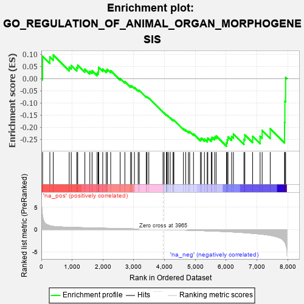
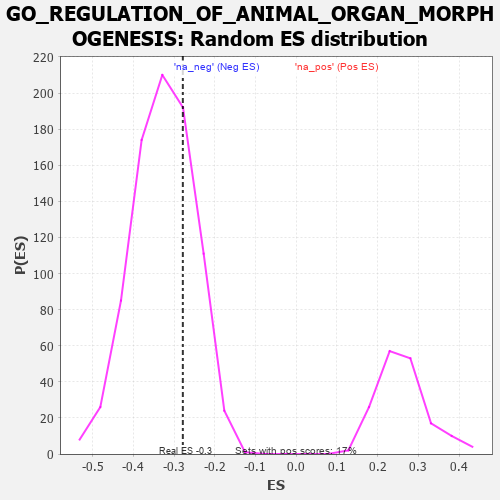

| | | Dataset | 7d |
| Phenotype | NoPhenotypeAvailable |
| Upregulated in class | na_neg |
| GeneSet | GO_REGULATION_OF_ANIMAL_ORGAN_MORPHOGENESIS |
| Enrichment Score (ES) | -0.2784727 |
| Normalized Enrichment Score (NES) | -0.85243976 |
| Nominal p-value | 0.7208183 |
| FDR q-value | 0.98218197 |
| FWER p-Value | 1.0 |
Table: GSEA Results Summary

Fig 1: Enrichment plot: GO_REGULATION_OF_ANIMAL_ORGAN_MORPHOGENESIS
Profile of the Running ES Score & Positions of GeneSet Members on the Rank Ordered List
| PROBE | GENE SYMBOL | GENE_TITLE | RANK IN GENE LIST | RANK METRIC SCORE | RUNNING ES | CORE ENRICHMENT | | 1 | SIX2 | | | 40 | 3.152 | 0.0919 | No |
| 2 | HGF | | | 276 | 0.870 | 0.0890 | No |
| 3 | BAX | | | 387 | 0.711 | 0.0969 | No |
| 4 | STOX1 | | | 905 | 0.506 | 0.0471 | No |
| 5 | DVL3 | | | 971 | 0.490 | 0.0539 | No |
| 6 | PSMD7 | | | 1152 | 0.454 | 0.0451 | No |
| 7 | PSMD2 | | | 1181 | 0.450 | 0.0554 | No |
| 8 | CARM1 | | | 1413 | 0.408 | 0.0387 | No |
| 9 | FZD1 | | | 1574 | 0.379 | 0.0301 | No |
| 10 | RXRA | | | 1647 | 0.365 | 0.0323 | No |
| 11 | PSMD4 | | | 1811 | 0.335 | 0.0220 | No |
| 12 | AP2S1 | | | 1846 | 0.329 | 0.0278 | No |
| 13 | PSMD6 | | | 1858 | 0.326 | 0.0364 | No |
| 14 | SMAD4 | | | 1860 | 0.326 | 0.0463 | No |
| 15 | ROR1 | | | 1993 | 0.306 | 0.0390 | No |
| 16 | BMP7 | | | 2107 | 0.290 | 0.0336 | No |
| 17 | PSME4 | | | 2143 | 0.285 | 0.0380 | No |
| 18 | PSMF1 | | | 2251 | 0.268 | 0.0327 | No |
| 19 | PSMD5 | | | 2560 | 0.218 | 0.0004 | No |
| 20 | PHB2 | | | 2712 | 0.197 | -0.0126 | No |
| 21 | FGFR2 | | | 2895 | 0.167 | -0.0305 | No |
| 22 | ACVR1 | | | 2932 | 0.161 | -0.0301 | No |
| 23 | WNT4 | | | 3023 | 0.146 | -0.0370 | No |
| 24 | BTBD7 | | | 3143 | 0.131 | -0.0480 | No |
| 25 | PSMD9 | | | 3179 | 0.125 | -0.0486 | No |
| 26 | MED1 | | | 3405 | 0.089 | -0.0743 | No |
| 27 | AP2A2 | | | 3433 | 0.085 | -0.0751 | No |
| 28 | GLI1 | | | 3489 | 0.079 | -0.0797 | No |
| 29 | GPC6 | | | 3950 | 0.002 | -0.1378 | No |
| 30 | EYA1 | | | 3987 | -0.006 | -0.1422 | No |
| 31 | SFRP2 | | | 4065 | -0.018 | -0.1513 | No |
| 32 | ROBO2 | | | 4066 | -0.018 | -0.1508 | No |
| 33 | CSF1 | | | 4074 | -0.019 | -0.1511 | No |
| 34 | WNT2 | | | 4084 | -0.021 | -0.1515 | No |
| 35 | ABL1 | | | 4125 | -0.027 | -0.1558 | No |
| 36 | AP2B1 | | | 4185 | -0.039 | -0.1621 | No |
| 37 | PSME3 | | | 4280 | -0.056 | -0.1722 | No |
| 38 | WNT11 | | | 4282 | -0.056 | -0.1706 | No |
| 39 | TBX2 | | | 4303 | -0.060 | -0.1713 | No |
| 40 | GATA3 | | | 4614 | -0.120 | -0.2068 | No |
| 41 | PTK7 | | | 4687 | -0.136 | -0.2117 | No |
| 42 | PIM1 | | | 4776 | -0.152 | -0.2182 | No |
| 43 | FBXW7 | | | 4816 | -0.161 | -0.2182 | No |
| 44 | FZD4 | | | 4940 | -0.186 | -0.2280 | No |
| 45 | TBX1 | | | 5166 | -0.241 | -0.2490 | No |
| 46 | SMO | | | 5195 | -0.247 | -0.2450 | No |
| 47 | MAGI2 | | | 5295 | -0.269 | -0.2492 | No |
| 48 | FZD5 | | | 5386 | -0.292 | -0.2516 | No |
| 49 | SOX8 | | | 5404 | -0.296 | -0.2447 | No |
| 50 | VDR | | | 5517 | -0.325 | -0.2488 | No |
| 51 | FGFR1 | | | 5543 | -0.332 | -0.2418 | No |
| 52 | ROR2 | | | 5626 | -0.353 | -0.2413 | No |
| 53 | PSMD1 | | | 5674 | -0.367 | -0.2360 | No |
| 54 | XBP1 | | | 6011 | -0.475 | -0.2639 | Yes |
| 55 | RAC1 | | | 6036 | -0.484 | -0.2520 | Yes |
| 56 | JAG1 | | | 6060 | -0.494 | -0.2397 | Yes |
| 57 | THRB | | | 6178 | -0.531 | -0.2382 | Yes |
| 58 | CDC42 | | | 6236 | -0.548 | -0.2285 | Yes |
| 59 | ROBO1 | | | 6577 | -0.699 | -0.2500 | Yes |
| 60 | MKS1 | | | 6607 | -0.715 | -0.2317 | Yes |
| 61 | AHI1 | | | 6860 | -0.848 | -0.2375 | Yes |
| 62 | RYK | | | 7102 | -1.000 | -0.2372 | Yes |
| 63 | AR | | | 7169 | -1.046 | -0.2134 | Yes |
| 64 | LHX1 | | | 7431 | -1.305 | -0.2063 | Yes |
| 65 | CAV3 | | | 7896 | -2.739 | -0.1807 | Yes |
| 66 | PSMD3 | | | 7907 | -2.887 | -0.0931 | Yes |
| 67 | PSMD8 | | | 7931 | -3.286 | 0.0051 | Yes |
Table: GSEA details [plain text format]

Fig 2: GO_REGULATION_OF_ANIMAL_ORGAN_MORPHOGENESIS: Random ES distribution
Gene set null distribution of ES for GO_REGULATION_OF_ANIMAL_ORGAN_MORPHOGENESIS